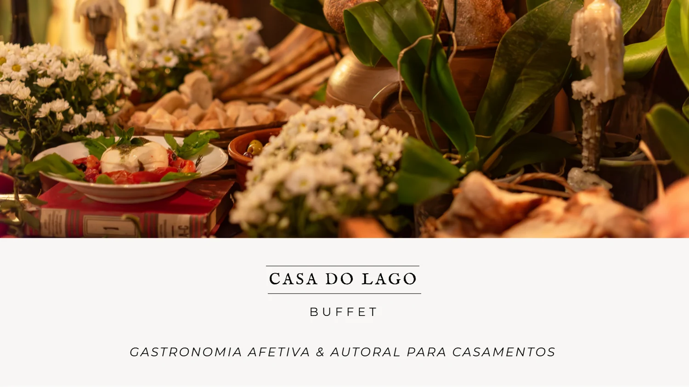
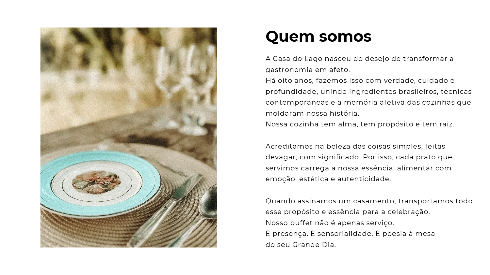
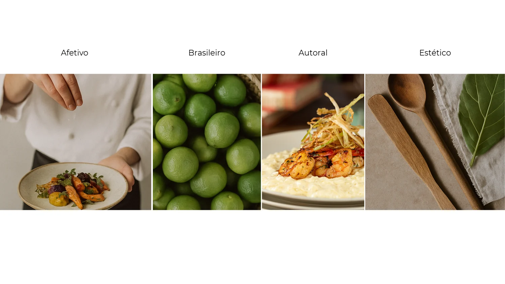
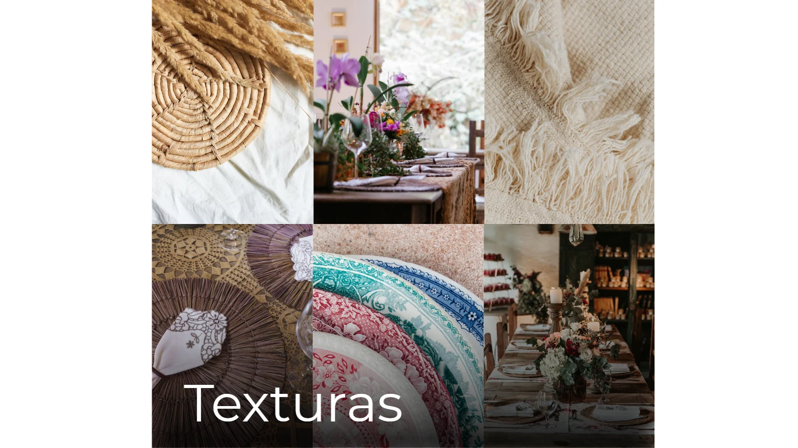
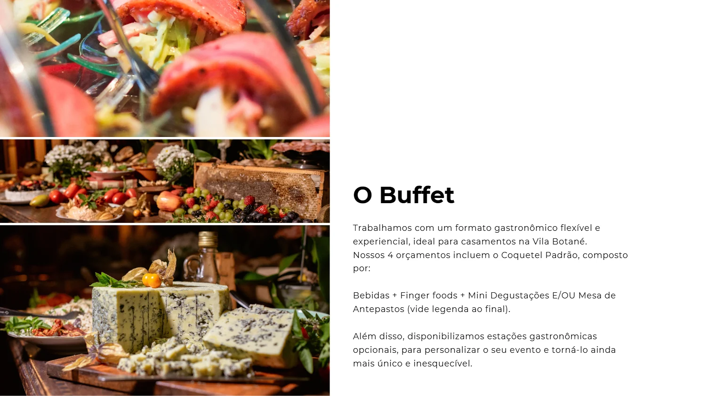
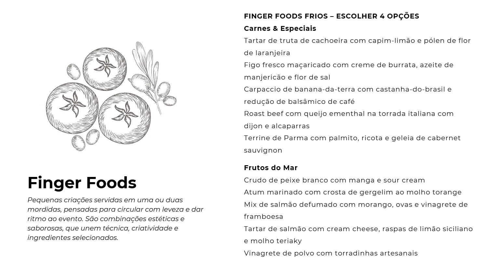
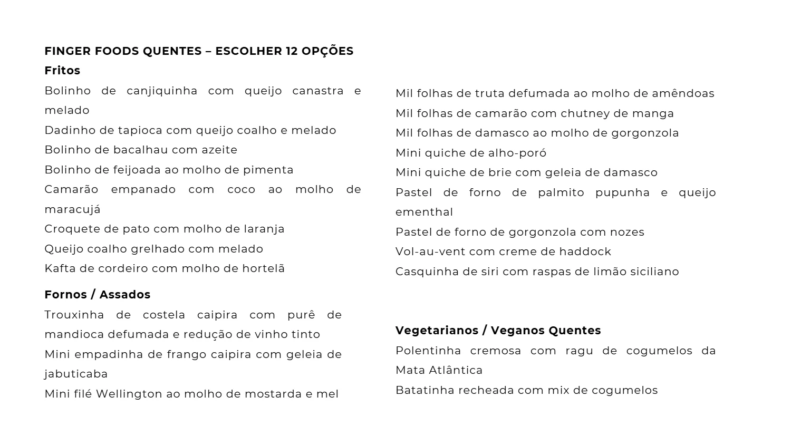
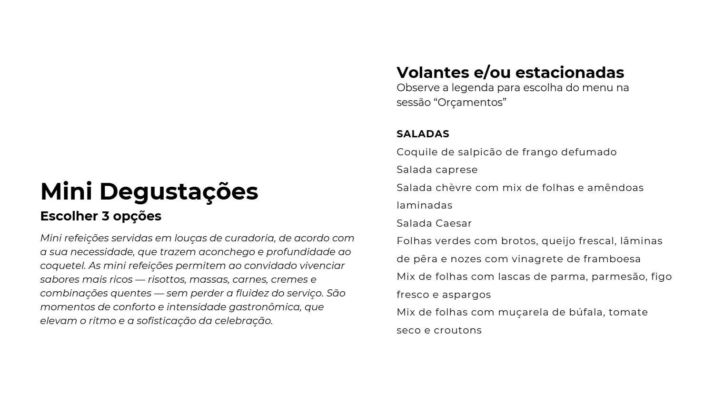
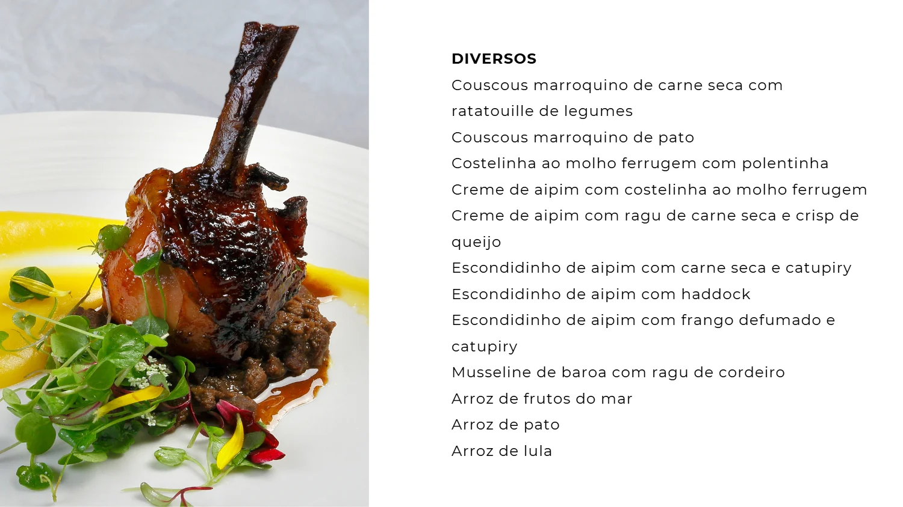
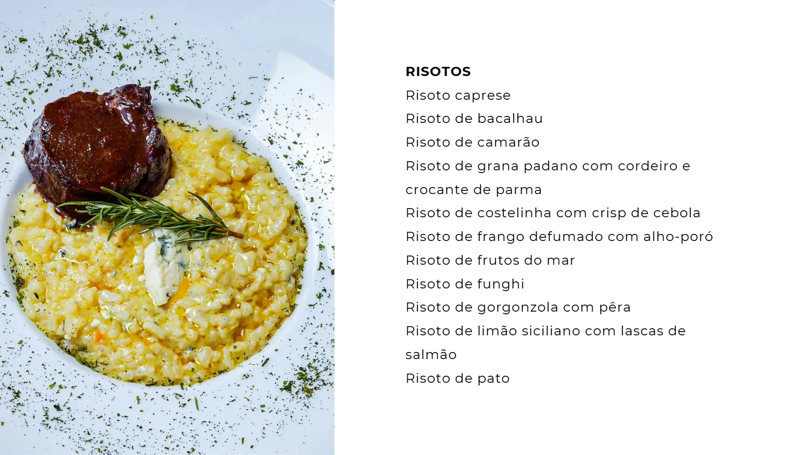
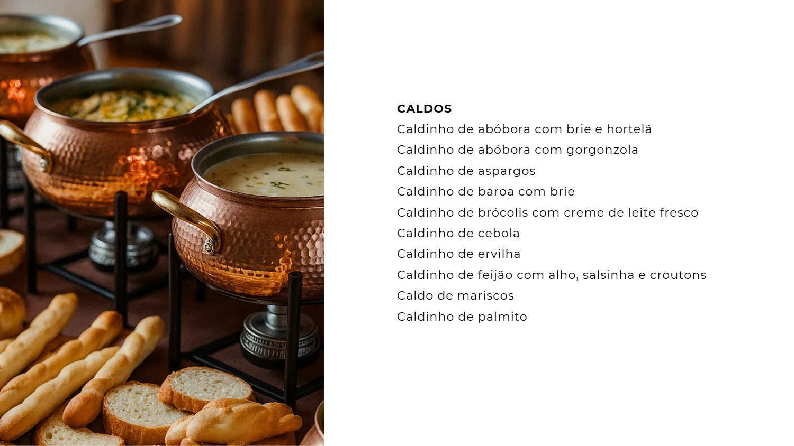
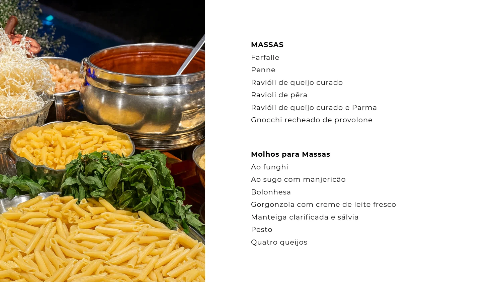
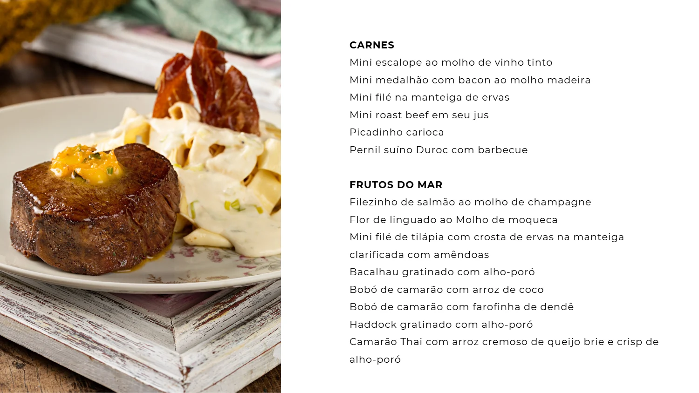
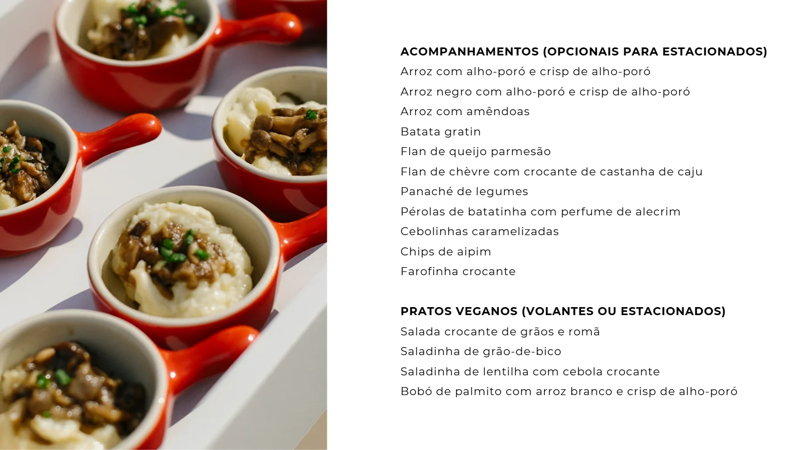
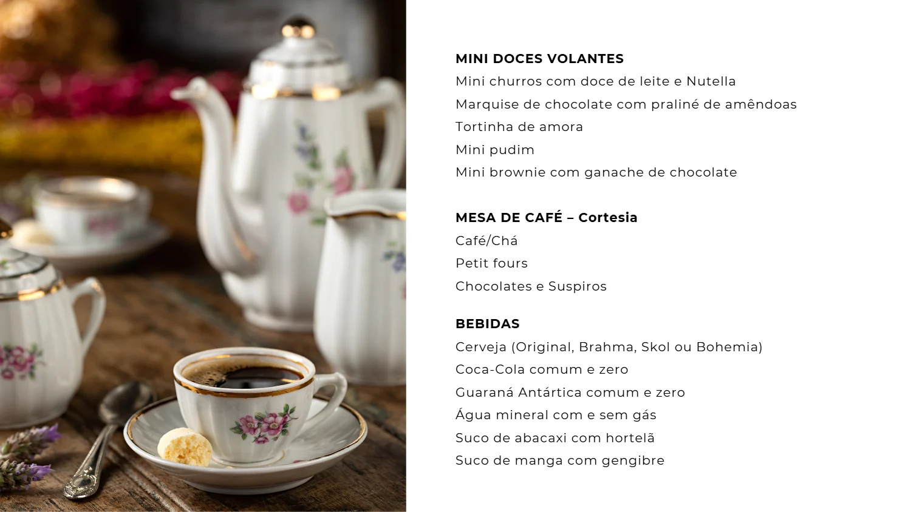
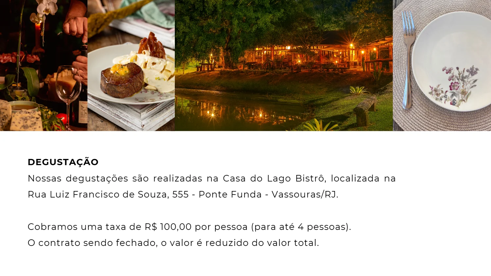
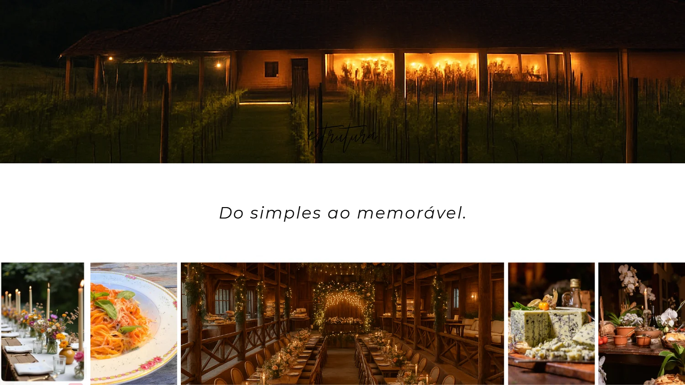
Buffet
A apresentação que entregamos aos casais, folha a folha: o que servimos, como servimos e como funciona a degustação aqui na casa.

















O próximo passo
Cada casamento é montado com o casal, à mesa. Conte o que vocês têm em mente e o cerimonial conduz o resto.